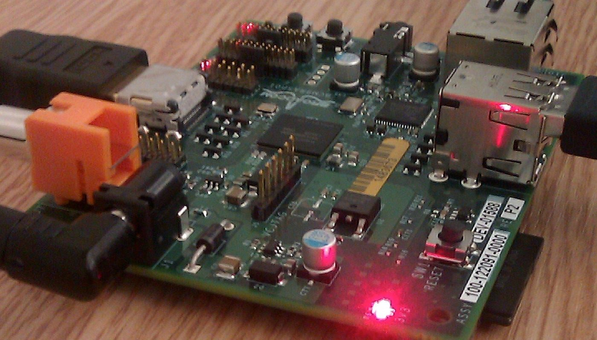

Indépendant · aucun lien affilié sur cette page · prix relevés les 1er et 2 oct. 2026
Un cadre e-ink qui reconnaît les oiseaux du jardin : la liste de courses réelle
Le projet est libre et gratuit : un petit ordinateur écoute le jardin, identifie les oiseaux sur place, et affiche sur un écran e-ink une planche naturaliste du XIXe siècle. Ce qui n'est pas gratuit, c'est le matériel — et c'est précisément là que les guides se contentent d'un « environ 250 € ». Cette page fait l'inverse : chaque poste, son prix, sa source, sa date, y compris les deux postes en rupture le jour de notre relevé.
Aucun lien affilié sur cette page — voir comment ça marche Aucun kit n'est en vente à ce jour
En bref
- Le logiciel est libre, le matériel ne l'est pas. Le code du projet est publié sous licence MIT et les illustrations naturalistes sous licence Creative Commons : rien à payer de ce côté.
- Comptez environ 234 à 238 € hors taxes pour la version 7,3 pouces, sur la base des prix que nous avons lus les 1er et 2 octobre 2026 — hors frais de port depuis le Royaume-Uni, qui ne sont pas publiés hors commande.
- Le poste le plus cher n'est pas celui qu'on croit. Ce n'est ni l'écran ni la carte : c'est le micro, à plus de 52 € — plus de la moitié du prix du petit ordinateur.
- Aucun kit n'est en vente. Le projet est un assemblage fait maison : il faut commander chez deux ou trois fournisseurs et flasher soi-même la carte mémoire.
Ce que fait réellement ce cadre
Le projet — appelé Fugleramme, « cadre à oiseaux » en norvégien — a été présenté publiquement en septembre 2026 et a occupé le haut d'une des principales pages d'actualité technique anglophones. Le principe est simple, et c'est ce qui explique son succès : un microphone capte le son du jardin en continu, un petit ordinateur analyse ce son localement, identifie l'espèce, puis affiche sur un écran à encre électronique une illustration naturaliste ancienne de l'oiseau entendu.
Trois points méritent d'être dits avant de sortir la carte bancaire :
- Tout se passe en local. L'analyse du son se fait sur l'appareil, pas sur un serveur distant. C'est la différence de fond avec les applications de reconnaissance d'oiseaux pour téléphone.
- L'écran e-ink n'est pas un écran classique. Il consomme très peu, mais il change d'image lentement : on parle d'un objet qui se met à jour quelques fois par heure, pas d'un flux vidéo.
- Ce n'est pas un produit fini. Le projet publie une liste de matériel et une procédure ; il ne vend rien, et nous n'avons trouvé aucun revendeur qui le propose monté.
La liste de courses, poste par poste
Les prix ci-dessous ont été lus sur les pages publiques des fournisseurs les 1er et 2 octobre 2026. Deux d'entre eux affichent la même valeur en livres sterling : nous reproduisons la conversion telle qu'elle apparaît dans notre relevé, sans la recalculer. Ces prix bougent, et au moins un poste est en rupture à la date du relevé.
| Poste | Prix relevé | Où | État au 2 oct. 2026 |
|---|---|---|---|
| Petit ordinateur (Raspberry Pi 5, 2 Go) | 64,00 € HT (76,80 € TTC) | Kubii, distributeur officiel France | En stock |
| Écran e-ink 7,3 pouces (Inky Impression) | 77,60 € (£66,25) | Pimoroni, Royaume-Uni | Disponible |
| Ventilateur actif | 4,39 € (£3,75) | Pimoroni | Disponible |
| Carte mémoire 32 Go pré-installée | 8 à 12 € | Revendeurs français | Remplaçable en France |
| Alimentation 27 W | 11,13 € (£9,50) | Pimoroni | Disponible |
| Cadre mural | 7,03 € (£6,00) | Ikea (référence RÖDALM) | Disponible |
| Adaptateur USB / alimentation intermédiaire | 9,07 à 10,53 € | Relevé sur une place de marché | Prix variable |
| Microphone USB | 52,42 € | Veldshop | Disponible |
| Petit ordinateur — fournisseur d'origine | 72,62 € HT | Pimoroni | En rupture |
| Carte mémoire — fournisseur d'origine | £8 | Pimoroni | En rupture |
| Total matériel (version 7,3 pouces) | ≈ 234 à 238 € HT | Deux à trois fournisseurs | Hors frais de port |
Les deux lignes en italique sont les postes d'origine du projet, en rupture le 2 octobre 2026 : nous les laissons visibles parce qu'elles expliquent pourquoi la liste officielle ne s'achète pas en une seule commande, et parce que la substitution change le prix.
Barres proportionnelles aux prix relevés, base à zéro (l'axe part de 0 €). La carte mémoire est affichée à 10,00 €, milieu de la fourchette 8–12 € constatée ; l'adaptateur à 9,80 €, milieu de la fourchette 9,07–10,53 €. Aucune autre valeur n'est estimée.

Le montage, en trois temps
Trois points qui décident du budget final
- Les frais de port ne sont pas publiés. Un des deux fournisseurs calcule le port au moment du paiement, selon le poids. Notre total s'arrête donc à l'entrée du panier — c'est une limite de notre relevé, dite telle quelle.
- Un port offert change la répartition. Le distributeur français annonce la livraison offerte en France à partir de 75 € : avec le petit ordinateur à 76,80 € TTC, ce poste part seul sans frais de port.
- L'écran est la seule pièce non substituable. C'est lui qui définit le rendu — et c'est le poste le plus cher de la liste : si le budget serre, c'est le format d'écran qu'il faut étudier en premier, pas le reste.
Questions
Peut-on l'acheter déjà monté ?
Non. Au 2 octobre 2026, nous n'avons trouvé aucun revendeur proposant ce cadre assemblé, et le projet ne publie pas de boutique. Ce que vous trouvez à la vente, ce sont les pièces.
Faut-il des compétences de développeur ?
Non, mais il faut accepter de suivre une procédure écrite et de préparer une carte mémoire. Si cette étape vous rebute, le projet n'est pas fait pour vous et aucun « kit » ne vous épargnera aujourd'hui.
Pourquoi la liste ne s'achète-t-elle pas en une commande ?
Parce que le fournisseur d'origine du projet est en rupture sur deux postes au jour de notre relevé, et que la substitution par un distributeur français est meilleure marché sur l'un des deux. Nous l'écrivons au lieu de recommander une commande unique qui n'existe pas.
Le budget peut-il déraper ?
Oui, par le port et par le microphone (52,42 €, soit plus que le petit ordinateur en version nue). C'est le poste à arbitrer en premier si vous cherchez à réduire la facture.
Cette page contient-elle des liens affiliés ?
Non. Aucun lien de cette page ne nous rapporte de commission à la date du 2 octobre 2026. Le programme d'affiliation du fabricant britannique fonctionne via une plateforme de créateurs qui n'est pas encore ouverte chez nous ; la page À propos indiquera la date le jour où cela changera, à l'endroit exact du lien.
Comment cette page est faite
- Aucun lien affilié ici. Le dépositaire naturel de ce type de page est le programme d'affiliation du fabricant ; il n'est pas ouvert, donc il n'y a aucun lien, et nous l'écrivons.
- Chaque prix a une source et une date. Les valeurs du tableau ont été lues sur les pages publiques des fournisseurs les 1er et 2 octobre 2026. Aucune n'est estimée ; les deux fourchettes affichées sont celles qui étaient publiées.
- Les ruptures sont affichées, pas contournées. Deux postes de la liste officielle étaient indisponibles chez le fournisseur d'origine le 2 octobre 2026. Nous les laissons visibles avec le remplacement que nous avons trouvé.
- Le total est un ordre de grandeur, et il est étiqueté comme tel. « ≈ 234 à 238 € HT » est la somme des postes relevés, hors port. Nous ne l'annonçons pas comme un prix ferme.
- Les images sont des banques libres, créditées en pied de page. Le rougegorge et la carte électronique illustrent le sujet : ce ne sont pas les pièces exactes de la liste.
Sources
- Page publique du projet Fugleramme — description, liste de matériel officielle, licences du code (MIT) et des illustrations (Creative Commons), consultée les 1er et 2 octobre 2026.
- Relevés de prix du 2 octobre 2026 : distributeur officiel français (petit ordinateur 5 en 2 Go, 64,00 € HT / 76,80 € TTC, en stock ; livraison offerte en France dès 75 € selon sa règle publiée) ; fabricant britannique (écran e-ink 7,3 pouces 66,25 £, ventilateur 3,75 £, alimentation 9,50 £ ; petit ordinateur 2 Go 72,62 € HT et carte mémoire 8 £ en rupture) ; chaîne de magasins suédoise (cadre mural, 6,00 £) ; deux revendeurs pour la carte mémoire (8 à 12 € en France) et le microphone (52,42 €).
- Discussion publique anglophone accompagnant la présentation du projet en septembre 2026 — contexte d'accueil et limites du projet (aucun verbatim cité ici).
- Crédits images (banque libre) : rougegorge — Alexis Lours, CC BY 4.0, via Wikimedia Commons · carte électronique — Paul Downey, CC BY 2.0, via Wikimedia Commons.
- Guides liés : Honest Switch — comparatif honnête · Répéteur WiFi : vérifier la promo · Renouvellement automatique des abonnements
Avis clients
Avis sur ce guide, publiés après vérification. Chaque avis négatif reçoit une réponse publique — c'est comme ça qu'on s'améliore. Si vous avez monté ce cadre, votre retour sur le coût réel et sur le temps passé nous intéresse plus que tout le reste.
Les premiers avis seront publiés ici dès que de vrais lecteurs en enverront.